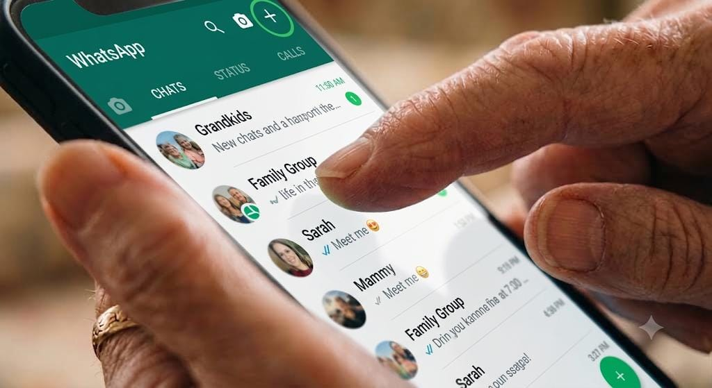
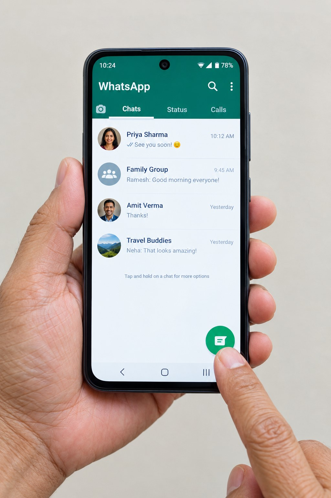
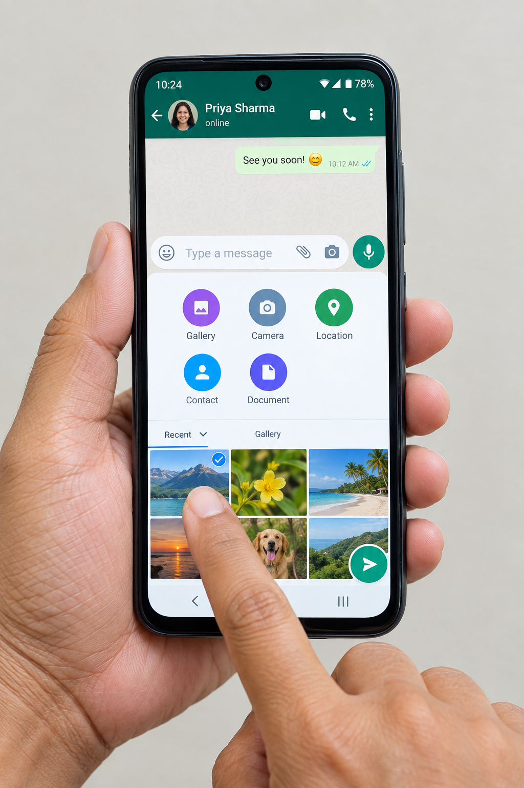
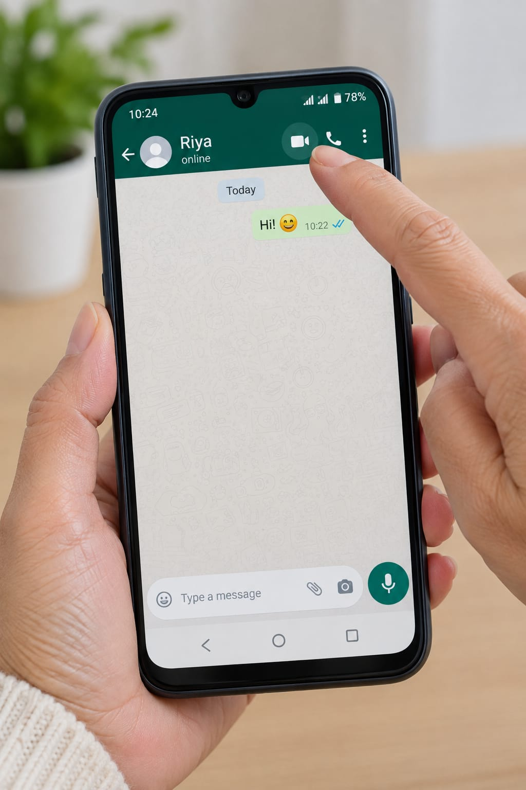
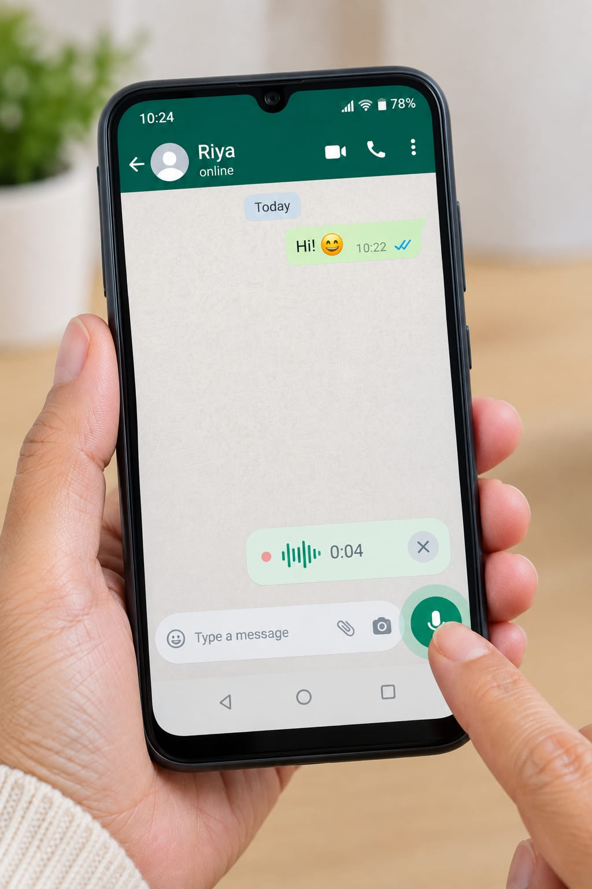

Chat, share photos and make video calls with the people you care about.
Pick a video on YouTube, click Share → Embed, and replace VIDEO_ID above with the code it gives you.

Lesson 1
Opening WhatsApp
Tap the green speech-bubble icon on your home screen to open the app.
If you can't find it, swipe down on the home screen and type "WhatsApp" to search.

Lesson 2
Starting a chat
Tap the round button with a pencil or "+", choose a contact, and type your message.
Only people already saved in your phone's contacts will show up in the list.

Lesson 3
Sending photos
In a chat, tap the paperclip or camera icon, then choose a photo or take a new one.
You can send several photos at once by tapping more than one before sending.

Lesson 4
Making a video call
Open the chat with that person and tap the small video camera icon at the top.
Make sure you're connected to Wi-Fi so the call doesn't use too much mobile data.

Lesson 5
Sending a voice message
Press and hold the microphone icon, speak, then let go to send.
If you let go too early it may not send — slide your finger up while holding to lock it in place instead.